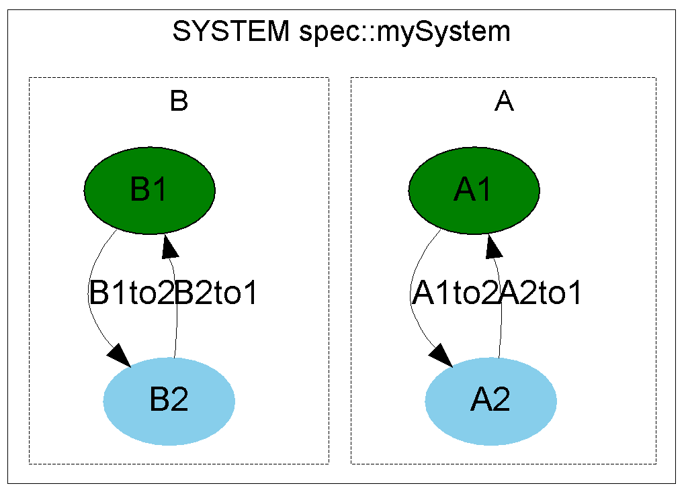
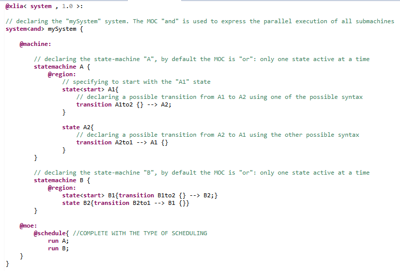

Let's consider the following system, composed of 2 identical statemachines : "A" and "B". Each one of those has 2 states ("A1", "A2" and "B1", "B2") and 2 transitions ("A1to2", "A2to1" and "B1to2", "B2to1") :
We can generate such a system from the following XLIA code :
